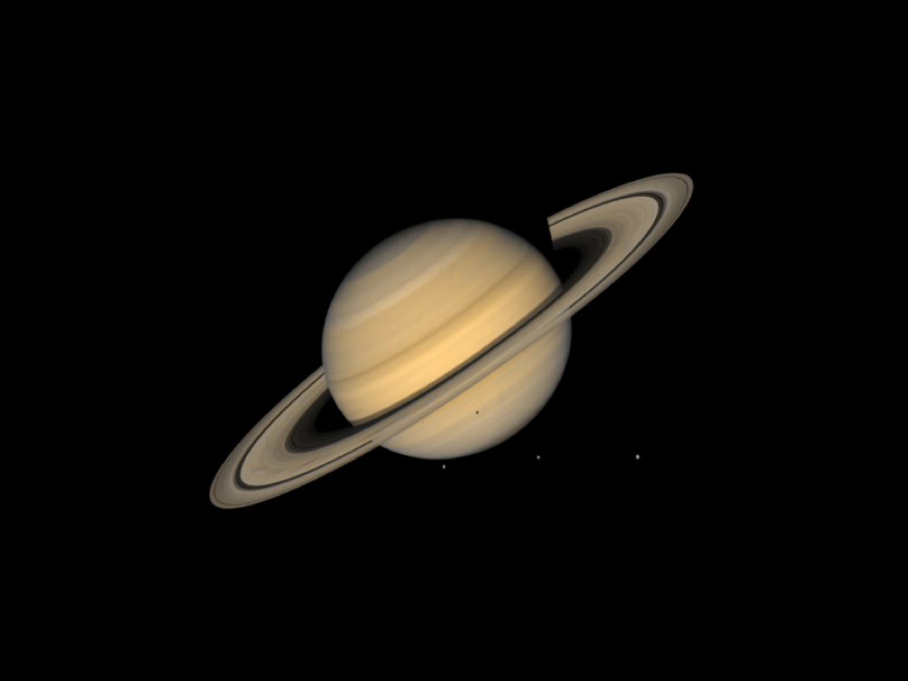

Saturn is the sixth planet from the sun and the second largest planet in the solar system. Saturn
was the Roman name for Cronus, the lord of the Titans in Greek mythology. Saturn is the root of the
English word "Saturday."
Saturn is the farthest planet from Earth visible to the naked human eye, but it is through a
telescope that the planet's most outstanding features can be seen: Saturn's rings. Although the
other gas giants in the solar system — Jupiter, Uranus and Neptune — also have rings, those of
Saturn are without a doubt the most extraordinary.

Saturn is a gas giant made up mostly of hydrogen and helium. Saturn is big enough to hold more than 760
Earths, and is more massive than any other planet except Jupiter, roughly 95 times Earth's mass.
However, Saturn has the lowest density of all the planets, and is the only one less dense than water —
if there were a bathtub big enough to hold it, Saturn would float.
The yellow and gold bands seen in Saturn's atmosphere are the result of super-fast winds in the upper
atmosphere, which can reach up to 1,100 mph (1,800 km/h) around its equator, combined with heat rising
from the planet's interior.
Saturn spins faster than any other planet except Jupiter, completing a rotation roughly every
10-and-a-half hours. This rapid spinning causes Saturn to bulge at its equator and flatten at its poles
— the planet is 8,000 miles (13,000 kilometers) wider at its equator than between the poles.
A recent curiosity may be the giant hexagon circling its north pole, with each of its sides nearly 7,500
miles (12,500 km) across — big enough to fit nearly four Earths inside. Thermal images show it reaches
some 60 miles (100 km) down into the planet's atmosphere. It remains uncertain what causes it, although
one study suggested that shallow jets in the atmosphere may be responsible for its formation.
Other titanic storms appear in Saturn's atmosphere once every Saturn year (approximately 30
Earth-years), disrupting the temperature and winds of the planet's skies. Six such storms have been
observed on the planet since 1876, but in 2011, NASA's Cassini spacecraft became the first orbiter to
observe one.
Saturn has at least 62 moons. Since the planet was named after Cronus, lord of the Titans in Greek
mythology, most of Saturn's moons are named after other Titans, their descendants, as well as after
giants from Gallic, Inuit and Norse myths.
Saturn's largest moon, Titan, is slightly larger than Mercury, and is the second-largest moon in the
solar system behind Jupiter's moon Ganymede. (Earth's moon is the fifth largest.) Titan is veiled under
a very thick, nitrogen-rich atmosphere that might be like what Earth's was long ago, before life. While
the Earth's atmosphere extends only about 37 miles (60 km) into space, Titan's reaches nearly 10 times
as far. The atmosphere contains a number of hydrocarbons, chemicals that primarily make up fossil fuels
on Earth. Methane rain falls from the sky and moves through the moon’s icy crust. A study detected
propylene, a chemical used to make plastics, in the planet's atmosphere. Observations released in 2016
show that Titan has surprisingly deep canyons flooded with liquid hydrocarbons.
These moons can possess bizarre features. Pan and Atlas are shaped like flying saucers; Iapetus has one
side as bright as snow and one side as dark as coal. Enceladus shows evidence of "ice volcanism," and a
hidden ocean spewing out water and other chemicals from the 101 geysers spotted at the moon's southern
pole. A number of these satellites, such as Prometheus and Pandora, are shepherd moons, interacting with
ring material to keep rings in their orbits.
Galileo Galilei was the first to see Saturn's rings in 1610, although from his telescope they resembled
handles or arms. It took Dutch astronomer Christiaan Huygens, who had a more powerful telescope, to
propose that Saturn had a thin, flat ring.
Astronomers with even more powerful telescopes discovered that Saturn actually has many rings made of
billions of particles of ice and rock, ranging in size from a grain of sugar to the size of a house. The
largest ring spans up to 7,000 times the diameter of the planet. The rings are believed to be debris
left over from comets, asteroids or shattered moons. (A 2016 study also suggested the rings may be the
carcasses of dwarf planets.) Although they extend thousands of miles from the planet, the main rings are
typically only about 30 feet thick. The Cassini-Huygens spacecraft revealed vertical formations in some
of the rings, with particles piling up in bumps and ridges more than 2 miles (3 km) high.
The rings are generally named alphabetically in the order they were discovered. They are usually
relatively close to each other, with one key exception caused by the Cassini Division, a gap some 2,920
miles (4,700 km) wide. The main rings, working out from the planet, are known as C, B and A, with the
Cassini Division separating B and A. The innermost is the extremely faint D ring, while the outermost to
date, revealed in 2009, could fit a billion Earths within it.
Mysterious spokes have been seen in Saturn's rings, which might form and disperse over a few hours.
Scientists have conjectured these spokes might be composed of electrically charged sheets of dust-sized
particles created by small meteors impacting the rings or electron beams from the planet's lightning.
Saturn's F Ring also has a curious braided appearance — it is composed of several narrow rings, and
bends, kinks, and bright clumps in them can give the illusion that these strands are braided. Changes in
the rings of Saturn, as well as the rings of Jupiter, are caused by impacts from asteroids and comets.
Late in its mission, the Cassini spacecraft had its orbit altered in a way that put it closer to the
rings than any other spacecraft. While data was still being analyzed as of late 2017, the spacecraft did
get a closer look at clumping particle structures called "straw," and features called "propellers,"
which could yield more information about the rings' formation.